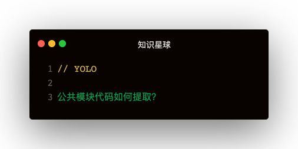

解答
有三种打包方式：
- commonsChunkPlugin
- splitChunksPlugin
- dll
commonsChunkPlugin
使用方法：
entry设置vendor：
entry: {
entryA: './a/entryA',
entryB: './b/entryB',
entryC: './c/entryC',
vendor: ['vue', 'vuex', 'axios']
},
plugins: [
new webpack.optimize.CommonsChunkPlugin({ name: 'vendor' })
]
缺点
- 公共代码冗余：commonsChunkPlugin把公共包打成一个包，入口A只用了vue，vuex，但下载的公共包中也有axios
- 异步组件重复打包
spliChunksPlugin
使用方法：
optimization: {
minimize: true,
splitChunks: {
chunks: "all",
minChunks: 1,
maxAsyncRequests: 20,
maxInitialRequests: 10,
name: true,
minSize: 30000,
}
},
抽离代码是有条件的
- 抽离代码需要大于30KB【minSize: 3000】
- 按需加载应用的代码，并行请求的数量不多于5次【maxAsyncRequest: 5】
- 初始化加载的代码块，并行请求不多于3次【maxInitialRequest: 3】
DLLPlugin
使用方法：
<!-- 配置一个webpack来打包公共包 -->
webpack.vendor.config.js
plugins: [
entry: {
vue: ['vue'],
vuex: ['vuex']
},
new webpack.DllPlugin({
name: '_dll_[name]',
path: path.resolve(__dirname, './dll/[name].manifest.json'),
})
]
webpack.app.config.js使用引用
plugins: [
new webpack.DllReferencePlugin({
context: __dirname,
manifest: require('./dll/vue.manifest.json'),
})
]
手动配置，新开一个webpack来构建公共包